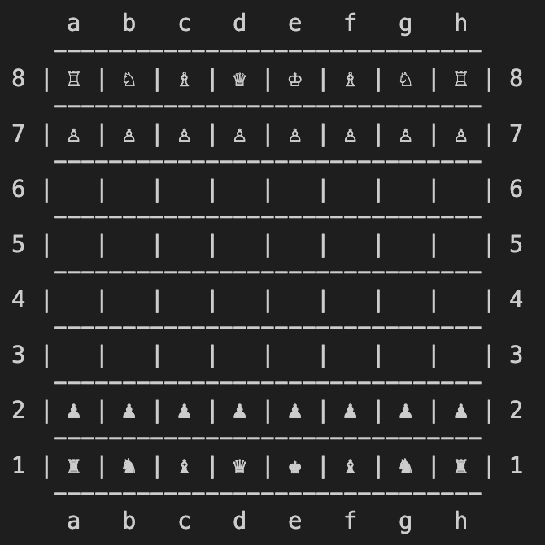
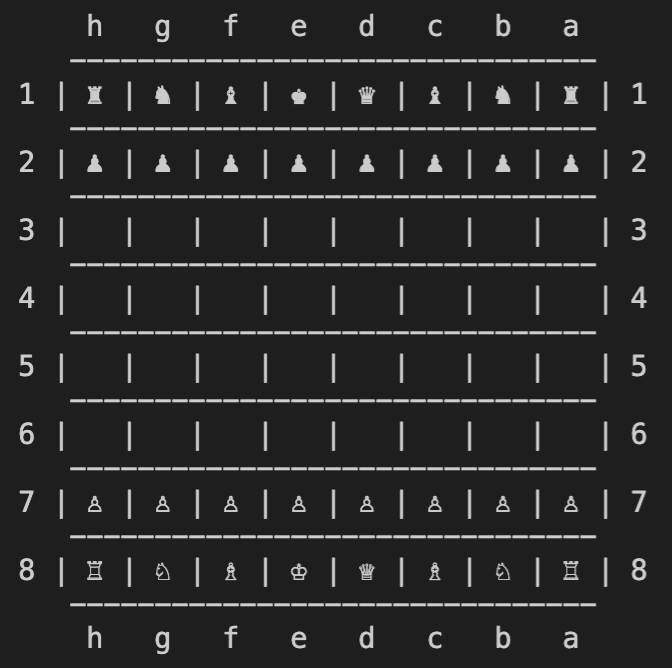
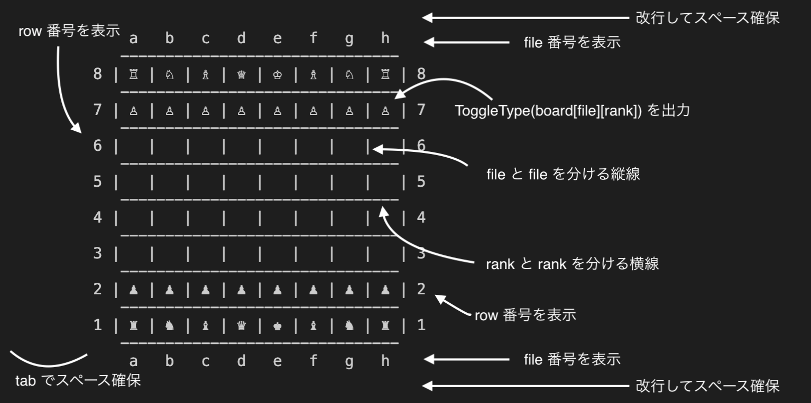
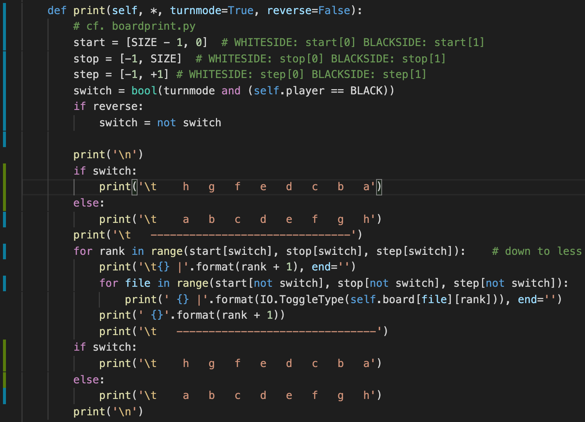

Stage 3 盤面のクラスの基本機能を作る
3-2 盤面を表示する
print メソッドの説明に入ります。最初にどんなものを作るか、イメージを掴みましょうか。
 
これ何がちげーんだ？
上下での違いは盤面を白側から見てるか黒側から見てるかですね。両方できるようにコーディングしていきます。
~~~~~~~~~~~~~~~
まずは print メソッドの引数の説明をしないといけませんね。
def print(self, *, turnmode=True, reverse=False):
turnmode は「白のときは白側から、黒のときは黒側から見えるように、盤面を回転させるか」を bool 型で指定します。True なら回転させます。
reverse はこの向きを逆にするか否か。つまり黒番で turnmode=True, reverse=False のときはこうなります。
これが turnmode=False, reverse=False だったり、白番で turnmode=True, reverse=True だったりすると
のようになります。メインはこっちです。
でも普通に引数には WHITE 側か BLACK 側かを入れればよくね？
つまりこういう感じにするってことですね。
def print(self, *, side=WHITE):
もちろんそれでもいいですよ。ただ「ここで print を使うときは盤面を回転させるんだな」とか「ここだとずっと白側から見るんだな」と言った情報が一眼見てわかるので、個人的にはどちらかというとこっち
def print(self, *, turnmode=True, reverse=False):
turnmode に bool 型を使うのをお勧めします。
~~~~~~~~~~~~~~~
では白側からでも黒側からでも、turnmode と reverse を設定すれば望みのように見えるようにするにはどうすればいいでしょう？
if で場合わけっしょ
もちろんそれも可です。でも and とか or とかがいっぱい入ってきてコードが煩雑になりますよ。
ここではスイッチの機構を使いましょう。つまり「白側から見たいとき」と「黒側から見たいとき」を自動的に分けてくれる仕組みを作ろうというわけです。
ではどんな時に白側から見て、どんな時に黒側から見ればいいのか、みなさまお得意の場合わけをしてみましょう。

イヤミかテメェ
reverse=False の場合
| self.player | WHITE | BLACK | |
| turnmode | True | 白 | 黒 |
| False | 白 | 白 | |
reverse=True では白と黒が逆になります。そりゃ reverse (反転する) って言ってんだから当たり前なんですが。
| self.player | WHITE | BLACK | |
| turnmode | True | 黒 | 白 |
| False | 黒 | 黒 | |
まずは白側から見るときの盤面を書いてみましょう。
ここで説明のためだけにご用意したファイル print.py をご覧ください。Board クラスを継承する形で BoardPrint を宣言し、その中に PrintWhiteSide メソッドを設けています。白側から盤面を見るメソッドです。
class BoardPrint(Board):
def PrintWhiteSide(self):
'''
a b c d e f g h
-------------------------------
8 | ♖ | ♘ | ♗ | ♕ | ♔ | ♗ | ♘ | ♖ | 8
-------------------------------
7 | ♙ | ♙ | ♙ | ♙ | ♙ | ♙ | ♙ | ♙ | 7
-------------------------------
6 | | | | | | | | | 6
-------------------------------
5 | | | | | | | | | 5
-------------------------------
4 | | | | | | | | | 4
-------------------------------
3 | | | | | | | | | 3
-------------------------------
2 | ♟ | ♟ | ♟ | ♟ | ♟ | ♟ | ♟ | ♟ | 2
-------------------------------
1 | ♜ | ♞ | ♝ | ♛ | ♚ | ♝ | ♞ | ♜ | 1
-------------------------------
a b c d e f g h
'''
print('\n') # spacing
print('\t a b c d e f g h') # the top file index
print('\t -------------------------------') # border
for rank in range(SIZE - 1, -1, -1): # down to less
print('\t{} |'.format(rank + 1), end='') # rank index and border
for file in range(SIZE):
print(' {} |'.format(IO.ToggleType(self.board[file][rank])), end='') # piece and border
print(' {}'.format(rank + 1)) # rank index
print('\t -------------------------------') # border
print('\t a b c d e f g h') # file index
print('\n') # spacing
コーディングする時に注意することをいろいろ書き込んでみました。必要に応じて拡大してください。
~~~~~~~~~~~~~~~
コーディングに突入します。まずは最初の改行でスペーシング。
def PrintWhiteSide(self):
...
print('\n') # spacing
次の print でもタブ文字 \t でスペーシングしてから、file 番号を左から a, b, ..., とふっていきます。
print('\t a b c d e f g h') # the top file index
次の行でもタブでスペーシングして、盤面の周りを囲む横線を書きましょう。
print('\t -------------------------------') # border
次の行からは rank に応じた操作をしていきます。rank 番号は上から 8, 7, 6, ... となるようにしたいので、それに対応するように for 文の range の中身を調節してください。
for rank in range(SIZE - 1, -1, -1): # down to less
ここで変数としてコードに書く rank は board[file][rank] という形をとりたいので、範囲が 0 ~ 7 つまり rank の挙動が 7, 6, ..., 1, 0 となるようにします。
for 文の中身に入ります。まずタブ文字でスペーシングしたら rank 番号を書き入れます。
print('\t{} |'.format(rank + 1), end='') # rank index and border
ここに書くのは 1 ~ 8 の番号ですよ。プレーヤーからしてみれば
コードの中では 0 ~ 7 じゃないといけないことなんざ、知ったことか
って言われてしまいますよ。ですから表示する数字は rank + 1 となりますよね。数字を入れたら盤面の内外を分ける縦線を入れてあげます。後ろのキーワード引数 end='' がないと改行されてしまいますので気をつけてください。
print('\t{} |'.format(rank + 1), end='') # rank index and border
これがないとほんと無様になりますので。
~~~~~~~~~~~~~~~
今度は rank の中で file を動かして、各マスに適した文字を入れていきます。file は左から a, b, ..., h とするんでした。rank の時と同じように、コードに書く変数 file は 0 ~ 7 としたいので、for 文の range には注意してください。
for file in range(SIZE):
for ループの中ではまず 2-4 で作った ToggleType を使って、board[file][rank] にある駒を表す特殊文字を入力します。
print(' {} |'.format(IO.ToggleType(self.board[file][rank])), end='')
ToggleType の中で EMPTY のときは空白を出力することにしていましたので、ここでは駒のあるなしで場合わけする必要はございません。よかったな。
どういうつもりだ。シバくぞコラ
キーワード引数の end='' もお忘れなく。
print(' {} |'.format(IO.ToggleType(self.board[file][rank])), end='') # piece and border
file を a ~ h まで全部ループしたら、最後に rank 番号を記入して、ようやく改行です。改行は end=... を放置しておけばいいんですよ。
print(' {}'.format(rank + 1)) # rank index
次の行ではタブ文字でスペーシングしたら rank と rank を分ける横線を入れます。
print('\t -------------------------------') # border
ここまでが rank 一つについて行う作業です。8 ~ 1 まで全ての rank をループしたら、あとは下端となる file 番号を記入して、改行してスペーシングすればおしまいです。
print('\t a b c d e f g h') # file index
print('\n') # spacing
いや、おしまいじゃないですね。まだ turnmode とかいじらなければいけませんから。

まだあんのかよ
まあ、思ってるほどキツくはないと思います。
~~~~~~~~~~~~~~~
さて、board.py に戻りますよ。まずはどこを変更するのか見てみましょう。
青と緑の線が図の左端にほそぉ〜く書かれていますが、その行が変更や付け足しをしたところになります。

うげ、ほとんどじゃねえか
さて、これまで白側からこんな盤面を見てきました。
一方黒側から見るとき、盤面はこうなりましたよね。
よく見て欲しいのが file と rank の移り変わり。どうなってます？
どっちも順番逆になってるわ
そう、file は左から h, g, ..., b, a のように、rank は上から 8, 7, ..., 2, 1 のようになってます。コードで変えなきゃいけないのは大きく分けて 2 つ。
- 上下の file 番号の順番
- for 文の range の中身
これっぽっちなら簡単そうだな
で、print メソッドの頭にあった start や stop, step といったリストは range の中身になります。
start = [SIZE - 1, 0] # WHITESIDE: start[0] BLACKSIDE: start[1]
stop = [-1, SIZE] # WHITESIDE: stop[0] BLACKSIDE: stop[1]
step = [-1, +1] # WHITESIDE: step[0] BLACKSIDE: step[1]
それぞれのリストの前の要素が白から見たとき、後ろの要素が黒から見たときのものです。
この前と後ろをスイッチで切り替えればいいんだな
~~~~~~~~~~~~~~~
まずは冒頭でお見せした表をもう一度みてみましょう。reverse=True のときですね。
| self.player | WHITE | BLACK | |
| turnmode | True | 白 | 黒 |
| False | 白 | 白 | |
黒側から見てるのは turnmode が True で player が黒の時だけ。それ以外は今まで必死こいて書いてきたコードがそのまま使えます。ここのスイッチも簡単ですね。
turnmode == True and (self.player == BLACK)
の時だけ黒くすればいいんですから。これを bool 型の switch としておきます。
reverse が True のときはどうすんだよ
True と False をひっくり返すだけです。簡単でしょ？reverse の値で場合わけして
if reverse:
switch = not switch
で真偽を反転させていますね。
こうやって得た switch と start, stop, step を早速 for の range に突っ込んでいきましょう。bool 型は True が 1, False が 0 に対応しますから、インデックスに突っ込むだけで丸く収まってくれます。
for rank in range(start[switch], stop[switch], step[switch]): # down to less
print('\t{} |'.format(rank + 1), end='')
for file in range(start[not switch], stop[not switch], step[not switch]):
print(' {} |'.format(IO.ToggleType(self.board[file][rank])), end='')
~~~~~~~~~~~~~~~
最後に盤面が反転したときの file 番号を逆向きにしておきましょう。switch が True なら黒側、つまり盤面を反転させるので、この場合では左から h, g, ..., b, a となるようにコーディングしてください。それ以外は白側です。a, b, ..., g, h のままで結構です。
if switch:
print('\t h g f e d c b a')
else:
print('\t a b c d e f g h')
print('\t -------------------------------')
for rank in range(start[switch], stop[switch], step[switch]):
print('\t{} |'.format(rank + 1), end='')
for file in range(start[not switch], stop[not switch], step[not switch]):
print(' {} |'.format(IO.ToggleType(self.board[file][rank])), end='')
print(' {}'.format(rank + 1))
print('\t -------------------------------')
if switch:
print('\t h g f e d c b a')
else:
print('\t a b c d e f g h')
print('\n')
これで print メソッドは全ておしまいです。お疲れ様でした。